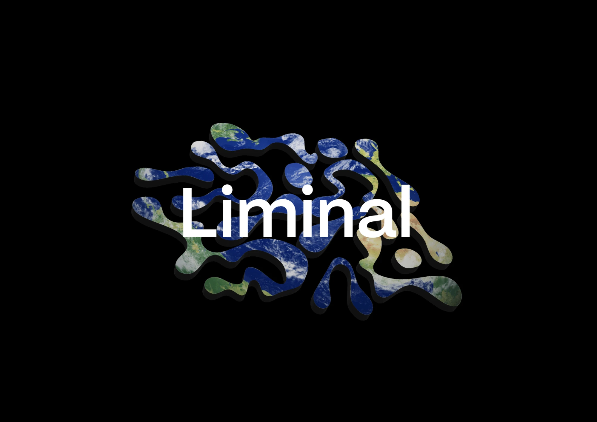
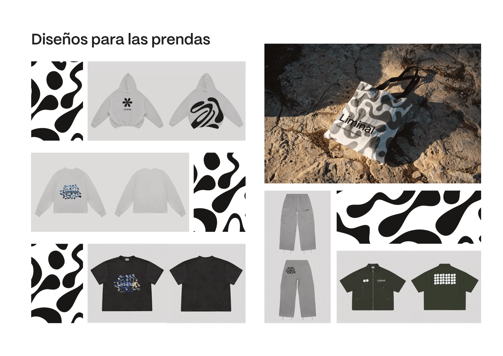
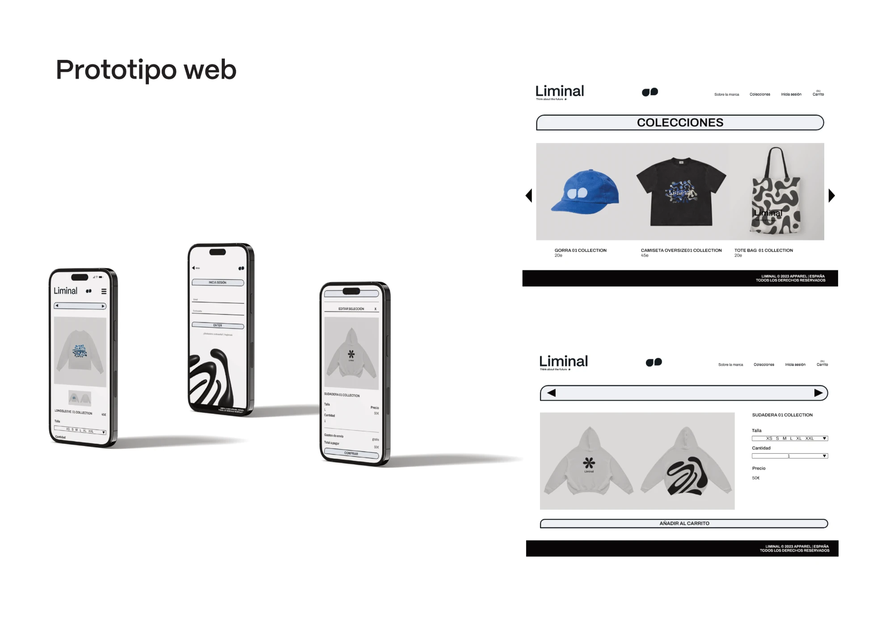
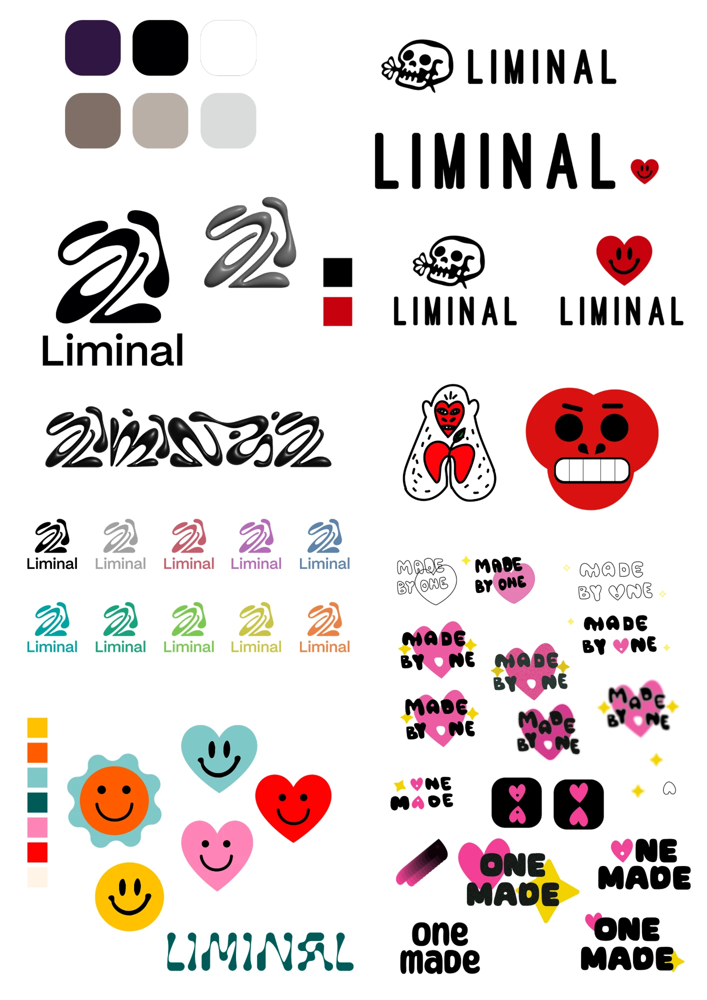
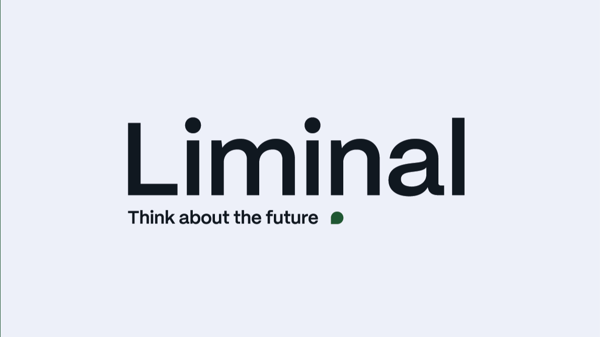
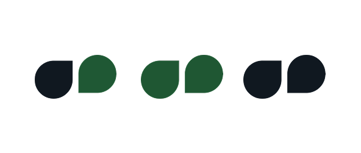
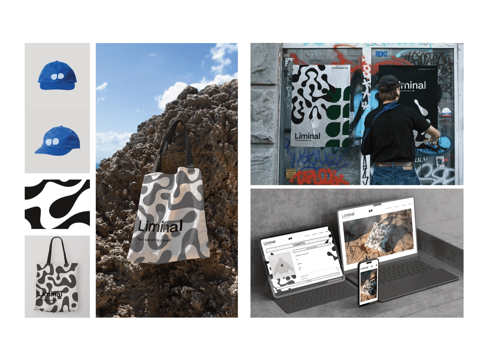

Diseño de identidad visual para Liminal, una marca ficticia de ropa streetwear sostenible: naming, logotipo, tipografía, paleta de color, primera colección y prototipo de web, pensados como alternativa consciente al fast fashion.

El streetwear, nacido como una actitud "hazlo tú mismo" en el Nueva York de los 80 (skate, punk, grafiti), ha sido absorbido en buena parte por el fast fashion: producción masiva, materiales de baja calidad y condiciones laborales precarias. Liminal nace como respuesta: una marca urbana sostenible que plantea la moda como herramienta de cambio y conciencia, y no solo como expresión estética.
Investigué los orígenes del streetwear, el modelo de fast fashion y su impacto ambiental y laboral, y analicé cuatro marcas de referencia: OBEY, Human Made, HUF y Off-White (ver más abajo). Esta investigación fue la que reveló el hueco que ocuparía Liminal.
2. Briefing y análisis DAFOVer la sección de Naming más abajo.
4. Diseño de logotipo e identidad visualVer la sección de Identidad visual más abajo.
5. Diseño de las prendas
6. Diseño de la página web
Antes de definir la identidad de Liminal, analicé cuatro marcas de streetwear de referencia, fijándome especialmente en su logotipo y en su relación real (no solo declarada) con la sostenibilidad.
Fundada por el grafitero Shepard Fairey desde el "hazlo tú mismo" y el punk. Logotipo icónico (la cara de André the Giant) en Futura Extra Bold Condensed Italic. Usa algo de algodón orgánico, pero sin medidas significativas de sostenibilidad más allá de eso.
Marca japonesa de Nigo, inspirada en "el futuro está en el pasado". Logotipo de corazón rojo sólido con tipografía simple. Apuesta por artesanía local y materiales orgánicos/reciclados: el referente más alineado con la sostenibilidad.
Fundada por el skater Keith Hufnagel en San Francisco. Logotipo simple ("HUF" sobre fondo negro, o dentro de un triángulo). No se promociona como marca sostenible ni hay información pública sobre políticas al respecto.
Virgil Abloh fusionando alta moda con estética urbana. Logotipo en mayúsculas, tipografía industrial. Ha introducido alguna iniciativa ambiental, pero sin certificarse como marca sostenible ni dar evidencias claras de reducción de impacto.
Hice una lluvia de ideas explorando distintas opciones, descartando aquellas que resultaban poco originales o no encajaban conceptualmente con la marca: Made by one, Muuttaa, One of One, Urban made, Top 1, entre otras.
Finalmente elegí "Liminal" por dos razones: se pronuncia y se recuerda fácilmente tanto en español como en inglés (clave en un sector donde el inglés es el idioma dominante), y su significado —estar en un umbral, en un espacio de transición entre lo que se ha ido y lo que está por llegar— capturaba exactamente la visión del proyecto: la transición de un modelo de fast fashion hacia una moda más consciente y sostenible.
Empecé con dibujos y lluvia de ideas en Illustrator y Photoshop, explorando composiciones más icónicas antes de descartarlas por no transmitir la sencillez y transparencia que buscaba para la marca.

El logotipo final es una composición basada en texto: el nombre "Liminal" junto al lema "Think about the future", acompañado de un pequeño icono verde que evoca una hoja de forma simplificada — un guiño directo a los valores de sostenibilidad y ecología de la marca. También diseñé una versión reducida del logotipo para tamaños pequeños o espacios limitados, y elementos gráficos que evocan al agua, en línea con el simbolismo de fluidez, cambio y adaptabilidad de la marca.


Busqué una combinación de dos tipografías de palo seco, por su aspecto limpio y contemporáneo. Como tipografía principal elegí Mori (Caio Kondo, variable semibold en el logotipo), una sans serif gótica inspirada en el diseño japonés contemporáneo, coherente con las referencias de moda japonesa que inspiraron la marca. Se usa en el logotipo y en titulares que necesitan máximo impacto visual.
Como tipografía secundaria, para cuerpos de texto y la web, elegí Archivo (Héctor Gatti), por su legibilidad y su amplia variedad de pesos:
Para elegir la paleta me apoyé en Psicología del color de Eva Heller (2004), buscando que cada tono respondiera a un significado concreto y no solo a la intuición. El resultado son tres tonos Pantone: negro, verde y blanco.
Para preservar la coherencia de la marca en cualquier aplicación, documenté todo esto —construcción del logotipo, área de seguridad, variantes cromáticas y usos incorrectos— en un manual de identidad.
Nombrar la marca "Liminal", en referencia a estar en un umbral o espacio de transición.
Funciona igual de bien en español e inglés (clave en moda urbana) y su significado encaja exactamente con la transición del fast fashion hacia una moda más consciente que plantea el proyecto.
Nombres como "Urban made" o "One of One": más descriptivos pero genéricos, sin un concepto propio detrás.
Construir el logotipo alrededor del nombre y el lema "Think about the future", con un único icono pequeño de apoyo.
Con pocos elementos se logra la transparencia y sencillez que buscaba para la marca, evitando la saturación visual de los logotipos más icónicos que exploré al principio.
Varias composiciones más icónicas (ver logotipos descartados): aportaban personalidad pero no la coherencia y legibilidad que sí da un logotipo tipográfico.
Elegir negro, verde y blanco apoyándome en la teoría de Eva Heller sobre el significado psicológico de cada color.
Cada color tiene una razón de ser: negro (elegancia/atemporalidad), verde (sostenibilidad) y blanco (pureza/minimalismo), en vez de una elección basada solo en gusto estético.
Elegir la paleta de forma puramente intuitiva: más rápido, pero sin el respaldo teórico que da coherencia y justificación a la decisión.
